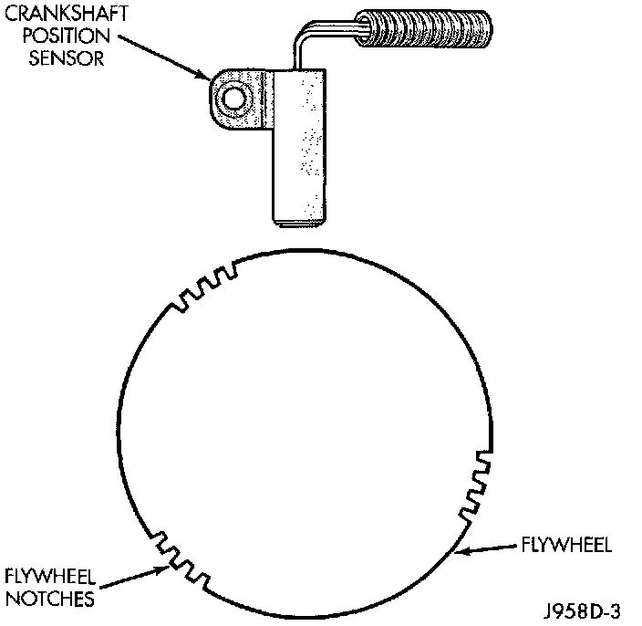

Crankshaft Position Sensor: Description and Operation
CRANKSHAFT POSITION SENSOREngine speed and crankshaft position are provided through the crankshaft position sensor. The sensor generates pulses that are the input sent to the Powertrain Control Module (PCM). The PCM interprets the sensor input to determine the crankshaft position. The PCM then uses this position, along with other inputs, to determine injector sequence and ignition timing.
The sensor is a hall effect device combined with an internal magnet. It is also sensitive to steel within a certain distance from it.
Fig. 4 Sensor Operation - 6-Cyl Engine:

The flywheel/drive plate has 3 sets of four notches at its outer edge (Fig. 4).
The notches cause a pulse to be generated when they pass under the sensor. The pulses are the input to the PCM. For each engine revolution there are 3 sets of four pulses generated.
The trailing edge of the fourth notch, which causes the pulse, is four degrees before Top Dead Center (TDC) of the corresponding piston.
The engine will not operate if the PCM does not receive a crankshaft position sensor input.
CIRCUIT OPERATION
The Powertrain Control Module (PCM) supplies 5 Volts to the crankshaft position sensor on circuit K25. Circuit K25 connects to cavity A17 of the PCM.
The PCM receives the crankshaft position sensor signal on circuit K27. Circuit K27 connects to cavity A5 of the PCM.
The PCM provides a ground for the crankshaft position sensor (circuit K27) through circuit K4. Circuit K4 connects to cavity A4 of the PCM.